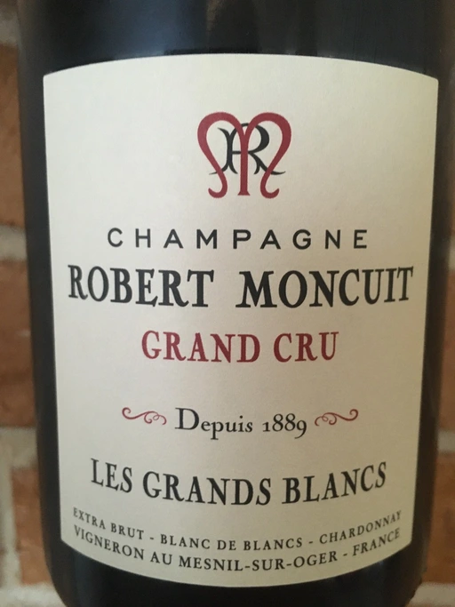

- Type
- White Sparkling, Extra brut
- Producer
- Robert Moncuit
- Vintage
- NV
- Location
- France, Champagne AOC
- Grapes
- Chardonnay
- Alcohol
- 12
- Sugar
- 3
- Price
- 1793 UAH, 1125 UAH
- Cellar
- N/A
Ratings
2021-01-22 - 8.00
What a value! Always reliable. Fresh and expressive, bouquet of apple tart, oil, chalk, lemon and brioche. Intense, flavourful with long aftertaste.
2020-08-07 - 8.00
Very expressive wine with bouquet of apple tart, Brie, mushrooms, almond, lemon and plastic. Refreshing, great mousse, multilayered. Amazing QPR.
2020-09-01 - 8.00
Solid. very well made basic Champagne. Apple, pear candy, lemon tart, plastic. Perfectly balanced, great mousse and very long finish. QPR is so strong in this one.